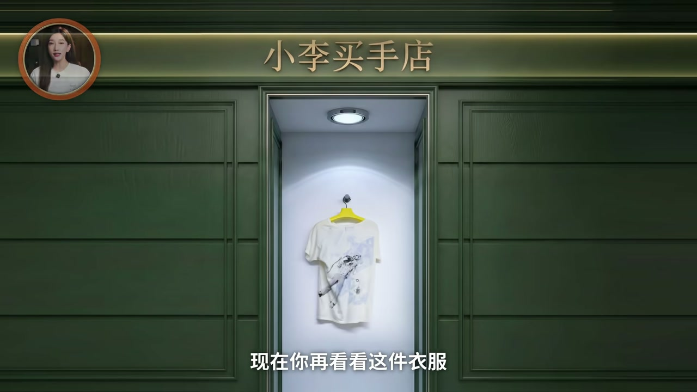
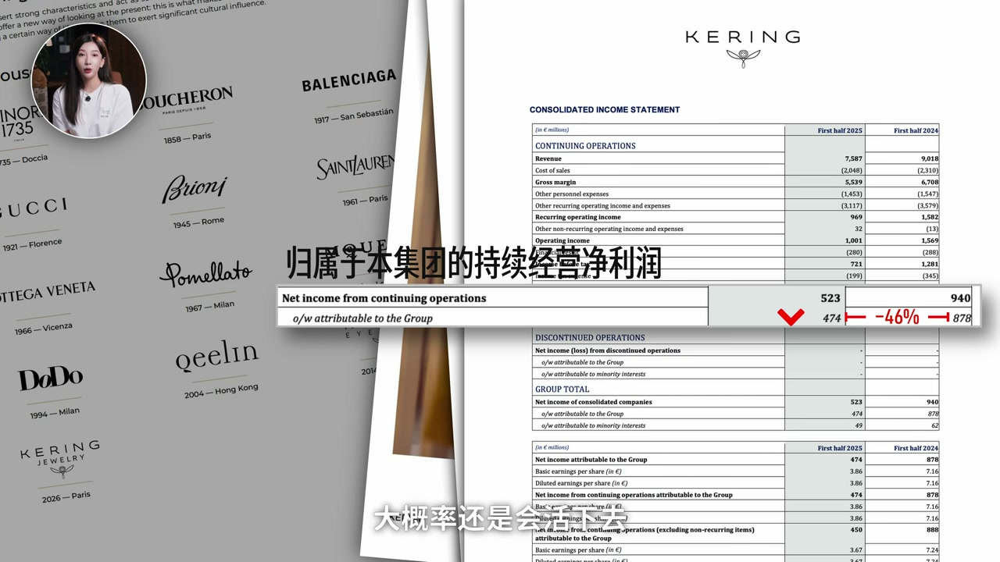
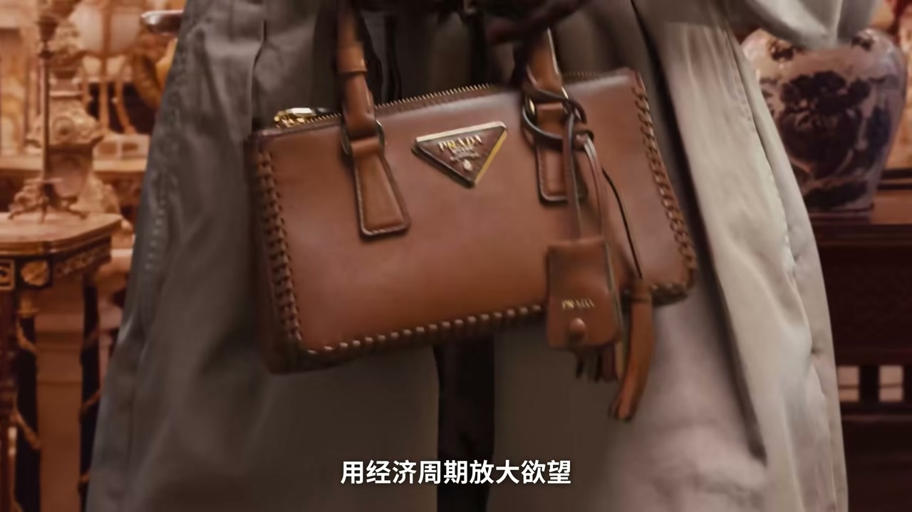

内容要点
视频从「一件破 T 恤怎么卖上天价」切入，拆奢侈品的底层逻辑：最核心功能始终是社会识别（让别人一眼看出你是谁）；价格繁荣高度绑定央行放水带来的财富效应；扛过危机靠的是集团化的审美对冲与多层客户结构。外围还有二手与假货两套影子经济——不进品牌财报，却加固「值得追逐」的共识。以下为作者观点纪实。
ASR 校正说明：「高电工坊」→高定工坊；「利丰」语境为历峰/Richemont；「保底家」→Bottega；「Gifanxi」→Givenchy；「broken包」→Birkin；人名品牌按通行译名统一。
知识结构
稀缺、故事、工坊仪式都是体验层；真正把「贵」变成奢侈的是一眼可辨的阶层信号。
放水→资产涨→奢侈品热；收水立刻凉。品牌不创造周期，却映照财富翻涌。
危机中顶层稳住、口红效应兜底；多品牌审美对冲让单一风格翻车不致死。
二手给保值叙事与低成本获客；假货在心理上强化真品差异——关系比「纯粹敌人」更复杂。
买奢侈品时分清三层：识别信号、周期位置、以及二手/假货是否已帮品牌完成「值得追」的社会证明。
00:00-03:50从天价 T 恤到「一眼认出你是谁」
开场用夸张卖货节奏追问：为什么「那么贵」还能扛过上百年仍把人卷入。稀缺、保值、创始人故事、工坊仪式都是真的，也是体验的一部分——但巴黎高定工坊从 1946 年约 106 家缩到约 15 家，说明仅靠匠人叙事并不足以解释「奢侈」本身。
把时间拉长：奢侈品最核心功能几乎没变——让别人一眼看出你是谁。这不是现代发明，而是长期社会分层的可见徽章。

03:50-07:00每个时代的「到场名片」与财富效应
新时代有钱人出现，就需要新名片：战后中产花园住宅对应 Dior New Look、爱马仕丝巾一类符号。印出来的钱大量涌向股市房市，账面财富上升带来消费意愿——经济学称财富效应；疫情期「关在家里看资产涨」再次推高奢侈品。
2023 年紧缩后账户感觉变差，市场肉眼可见转凉。三段周期同一剧本：放水膨胀→奢侈品爆发；收水缩水→立刻凉凉。奢侈品操控不了欲望周期，却像镜子照出财富翻涌。
07:00-10:30百年老店背后的资本化机器
专柜里的「孤独工匠」滤镜要打破：你走进商场以为在选品牌，资本眼里是不同集团棋盘——LVMH、开云、历峰，加上独立运营的爱马仕与香奈儿，五家巨头基本控制大局。
2008 年海啸后奢侈品恢复极快，因买家不是一波人：顶层超级富豪与老钱在危机中仍买得起顶级表与珠宝；底层有「口红效应」；中间层最敏感。审美是另一变量——Gucci 风格大转弯可暴跌，同集团另一品牌逆势；LVMH 多品牌本质是审美对冲组合。

10:30-17:10二手与假货：财报外的影子经济
二手市场被误读为「抢新品生意」；作者强调格局更大：成交价验证保值叙事，降低专柜购买阻力，并把消费品半资产化；同时是低成本获客漏斗。
假货伤害原创是实打实的，但社会心理研究提示：真品用户知道满街高仿后，可能更珍视手中的真品。两个影子市场——明处蓄水保值，暗处强化「值得被追逐」——共同垫高帝国地基。结尾回到开场白 T：欲望与审美如何被标价，答案在识别、周期与影子共识的叠加。

完整转录（258段）
以下文本由 Whisper 自动转录，可能存在识别误差；正文已按语境校正专有名词。
你觉得这件破T恤是多少钱
,
,
注意剛剛這30秒我賣賣賣賣賣�
,
怎麼那麼那麼貴那麼貴而且過了上百年還沒崩又是怎麼一步把你我捲入其的
上星公益手工縫線打贏老工坊或者物實點它稀缺保值不喜歡了還能賣個好價甚至跟你科普創始人當年在巴黎白手起家的故事
這些都是真的也確實是奢侈品體驗的一部分但巴黎高定工坊從1946年的106家縮減到了今天只剩15家
他們的匠人精神儀式感品牌故事比任何商品品牌都更極致但大部分人卻沒能成為一個奢侈品牌
那真正把貴一變成奢侈品的底層邏輯到底是什麼
這些品牌如何扛過兩次世界大戰扛過金融海嘯還能讓很多人心甘情願都為上百倍的一架買單來我們一層層拆
咱們先來看看奢侈品這個概念是怎麼被一步步造出來的第一步我們看它的功能咱們把時間拉長來看
奢侈品最核 싼的功能其實一直都沒有變過那就是讓別人一眼看出你是誰
這事可不是現代才有的文馬時間撥回14世紀�
把人分成兩波夠得著的和夠不著的
一身既體面又溜溜的型頭就是最好的宣言可可納的套裝精準的補上了這個空缺戰後經濟起飛
歐美中產崛起上一代可能還在工廠擰螺絲這一台突然出上了帶花園的房子
那怎麼證明自己是花園裡有品位的體面人呢
迪奧的new look愛馬仕的絲巾就成了標配你發現沒有每個時代也有新的有錢人出現他們就需要一個東西來證明自己到場了
而奢侈品非常及時的衝到了這張名片
但印出來的錢去哪了呢
大部分湧進了股市和房市股票漲了房價漲了
其實很多人工資沒漲但打開賬戶覺得自己變有錢了
經濟學管著叫財富效應
你的資產賬面價值上升了你就願意花更多的錢奢侈品大家是財富效應最直接的受益者2020年的疫情各國是又一輪猛印錢
大家關在家裡花不出去錢手機上一看股票又漲了IoVmH業績股價雙雙創歷史新高
CEO一度成為全球首富
2023年美聯儲假期全球收緊
賬戶裡的感覺從我好像有錢了變成了我好像又沒那麼有錢了
所以奢侈品的市場立馬肉眼可見的涼了下來
三段周期其實是同一個劇本
央行一放水資產一膨脹財富效應啟動奢侈品爆發
央行一收水資產縮水財富效應消退奢侈品就立刻涼涼了
奢侈品操控不了誰的慾望不會創造周期
但它卻向一面鏡子照出了財富的翻湧
但問題又來了
既然小李你說奢侈品這麼被動
完全是被經濟周期推著走的
聽起來有點脆弱
怎麼就出了這麼多百年老店呢
接下來我們就來拆拆這個問題
這些巨頭到底造了一台什麼樣的機器
能讓自己扛過一次次的經濟崩盤呢
要回答這個問題我們要先打破一個濾鏡
我們在專櫃裡看到的奢侈品往往被包裝成一位孤獨高傲的百年老工匠
堅持著自己的美學
但你記得我們剛剛提到的數字嗎
巴黎的高電工坊從1946年的106家縮減到了今天只剩15家
這是因為真實的奢侈品世界是一台高度精密
等級計算的現代資本化機器
當你走進商場你以為你在選不同的品牌
但在資本眼裡你只是走進了不同集團的棋盤
第二屬於LVMH
Gouji屬於開雲集團
再加上利豐集團以及獨立運營的愛馬仕和香奈兒
這五家巨頭基本上控制著全球奢侈品市場的命脈
光是LVMH一家手裡就握著75個品牌
佔據了全球市場的四分之一
這些單獨的品牌能扛過一輪又一輪的崩盤
靠的就是集團化創造的兩層對沖保險
第一層是消費者的對沖
2008年9月雷曼兄弟倒了
全球金融海嘯來襲
LVMH的股價從80歐跌到了40歐直接腰斬
香奈兒才200人
利豐集團季度銷售直接跌了12%
按這個價勢恢復期怎麼也得5到10年吧
結果沒想到奢侈品市場
2009年就開始反彈
到2010年全面恢復
2011年直接創歷史新高
跑的比汽車房地產還快
甚至連科技行業都追不上
為什麼呢
因為買奢侈品的從來都不是一波人
而是三波
而且這三波在危機裡的反應完全不同
首先是消費能力最強的頂層
超級富豪和老錢家族
其實危機對他們來說就像下了場雨
衣服濕了但人沒事
2008年最慘的時候
百達匪利的頂級萬表
卡地亞的高級珠寶
這個現行多戶的銷量可是非常穩定
底層的口紅效應兜著頂
頂層的富豪全程依然不動
不管外面怎麼風吹雨打
總有人往上台機器裡塞錢
好 這才是第一層
那第二個男一側的變量是審美
Gucci就是個活例子
Gucci在三者時代火得一塌糊塗
2022年營收破了104億歐元
但是他走了之後品牌風格大轉彎
消費者就不買賬了
2014年他們的營收暴跌了23%
利潤腰斬
但同一年同一個開雲集團里
保底家的直營零售漲了10%
Q4增長了12%
同一個集團同一個經濟環境
一個暴跌一個逆勢增長
而區別就在於審美方向賭對了沒有
如果Gucci是獨立sst
這種暴跌可能是致命的
但它屬於開雲屬於一個集團
一個崩了另一個就補上唄
再看隔壁的LVMH集團就更會玩了
75個品牌
本質上就是一個巨大的審美對沖組合
你喜歡極簡有Celine
你喜歡華麗有Dior
你走街頭路線有Off-White的遺產
你要老前優雅有Gifanxi
利潤跌了17%
到了2025上半年更難看
利潤直接跌了22%
連最核心的印鈔機
時尚和皮具部門都開始下滑了
開雲那邊就更慘了
利潤就有是腰斬級別的暴跌
但既然如此
按照我們之前的分析
我們大概率還是會活下去
並且在下一個周期裏再次乘風而起
這就是這臺機器的精妙之處
好
剛才我們拆完了奢侈品這個概念的底層邏輯
也看清了這臺機器的運作方式
反正還沒完啊
這還只是冰面上的東西
圍繞奢侈品的核心市場
它的外圍長出了一個
體量極其龐大的影子經濟
它們不在任何一家品牌的財報裏
卻深刻影響了整個行業的運轉
奢侈品有兩個最經典的影子經濟
二手市場和假貨市場
很多人第一反應是
二手不就是在搶品牌的生意嗎
你買了二手LV就不去專櫃了呀
但咱如果這麼想
格局確實有點小了
2014年全球二手奢侈品市場規模
大概是372億美元
增速已經跑贏了新品市場
這麼大一塊蛋糕
品牌不但沒被風流
反而收穫了三個巨大的隱性buff
第一個是保值敘事
你肯定刷到過類似的新聞
什麼broken包相待包
幾年漲了幾倍
買包就是理財的說法
但這話為什麼有人信呢
可不只是因為銷售嘴甜
這可是二手平台上
實打實的成交價替大家驗證的
當一個人在專櫃刷卡的時候
腦子裏閃過一句
我不喜歡了還能賣點錢
那他的購買阻力就直接減半
二手市場的存在
讓奢侈品在消費者心裏
直接從純消費
帶點資產屬性的消費
第二個buff是免費試用
數據顯示
有超過50%的Z世代
願意買二手奢侈品
你想想
一個25歲的年輕人
花了5000塊
在二手平台拿下了
人 comprar的第一支經典款的LV
這難道是LV的損失嗎
他提前習慣了這個品牌的
審美觸感logo
等到過幾年收入上來了
大概率會毫不猶豫地走進專櫃
買新品
這簡直是最低成本的貨客渠道
二手市場就是品牌的超級漏洞
上頭免費下頭收費
第三個buff就是吸血感的放大器
當一款已經停產的
LV常年把榜被仿冒最多的品牌
LVMH每年光打假就砸1700萬美元
但如果我們暫時不討論
買賣假貨的法律責任
純粹從社會心理學的角度看
這裡面藏著非常多反直覺的東西
第一是假貨越多
真品用戶者反而越爽
這個不是小李瞎說的
早在2000年就學者在學術器官上
做過一項經典研究
當一個高進士客戶
知道滿大街都是自己同款的高仿師
他不但不會把真包扔了
心理上反而更珍視手裡的真品
為什麼呢
當然必須說清楚
沒有任何品牌會真心感謝假貨
假貨對原創的傷害是實打實的
但不可否認
在這場漫長的貓鼠遊戲裡
假貨與真品之間的關係
遠比純粹的敵人複雜得多
而這兩個影子市場
一個在名處幫品牌蓄刻報紙
防財稀缺
一個在暗處幫品牌強化
值得被追逐的共識
雖然他們都不在品牌的財報里
但共同唾棄了整個奢侈品帝國的地基
1
1
1
1
1
1
1
1
1
1
1
1
1
1
1
1
1
1
1
1
1
1
1
1
1
1
1
1
1
1
1
1
1
1
1
1
1
1
1
1
最後你還記得開頭那件白色